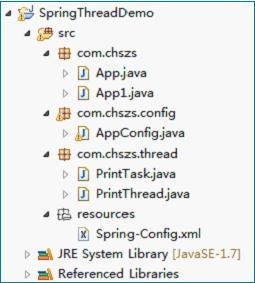

作者：chszs，转载需注明。
作者博客主页：http://blog.csdn.net/chszs2）项目所需的JAR包如图所示：
下面开始。
通过继承Thread创建一个简单的Java线程，然后使用@Component让Spring容器管理此线程，Bean的范围必须是prototype，因此每个请求都会返回一个新实例，运行每个单独的线程。
package com.chszs.thread;
import org.springframework.stereotype.Component;
import org.springframework.context.annotation.Scope;
@Component
@Scope("prototype")
public class PrintThread extends Thread{
@Override
public void run(){
System.out.println(getName() + " is running.");
try{
Thread.sleep(5000);
}catch(InterruptedException e){
e.printStackTrace();
}
System.out.println(getName() + " is running again.");
}
} package com.chszs.config;
import org.springframework.context.annotation.ComponentScan;
import org.springframework.context.annotation.Configuration;
@Configuration
@ComponentScan(basePackages="com.chszs.thread")
public class AppConfig {
} package com.chszs;
import org.springframework.context.ApplicationContext;
import org.springframework.context.annotation.AnnotationConfigApplicationContext;
import com.chszs.config.AppConfig;
import com.chszs.thread.PrintThread;
public class App {
public static void main(String[] args){
ApplicationContext ctx =
new AnnotationConfigApplicationContext(AppConfig.class);
PrintThread printThread1 = (PrintThread)ctx.getBean("printThread");
printThread1.setName("Thread 1");
PrintThread printThread2 = (PrintThread)ctx.getBean("printThread");
printThread2.setName("Thread 2");
PrintThread printThread3 = (PrintThread)ctx.getBean("printThread");
printThread3.setName("Thread 3");
PrintThread printThread4 = (PrintThread)ctx.getBean("printThread");
printThread4.setName("Thread 4");
PrintThread printThread5 = (PrintThread)ctx.getBean("printThread");
printThread5.setName("Thread 5");
printThread1.start();
printThread2.start();
printThread3.start();
printThread4.start();
printThread5.start();
}
} 使用Spring的ThreadPoolTaskExecutor类创建一个线程池。执行线程无需受Spring容器的管理。
package com.chszs.thread;
public class PrintTask implements Runnable{
String name;
public PrintTask(String name){
this.name = name;
}
@Override
public void run() {
System.out.println(name + " is running.");
try{
Thread.sleep(5000);
}catch(InterruptedException e){
e.printStackTrace();
}
System.out.println(name + " is running again.");
}
} <beans xmlns="http://www.springframework.org/schema/beans"
xmlns:xsi="http://www.w3.org/2001/XMLSchema-instance"
xmlns:context="http://www.springframework.org/schema/context"
xsi:schemaLocation="http://www.springframework.org/schema/beans
http://www.springframework.org/schema/beans/spring-beans-3.1.xsd
http://www.springframework.org/schema/context
http://www.springframework.org/schema/context/spring-context-3.1.xsd">
<bean id="taskExecutor"
class="org.springframework.scheduling.concurrent.ThreadPoolTaskExecutor">
<property name="corePoolSize" value="5" />
<property name="maxPoolSize" value="10" />
<property name="WaitForTasksToCompleteOnShutdown" value="true" />
</bean>
</beans> 
package com.chszs;
import org.springframework.context.ApplicationContext;
import org.springframework.context.support.ClassPathXmlApplicationContext;
import org.springframework.scheduling.concurrent.ThreadPoolTaskExecutor;
import com.chszs.thread.PrintTask;
public class App1 {
public static void main(String[] args) {
ApplicationContext ctx =
new ClassPathXmlApplicationContext("resources/Spring-Config.xml");
ThreadPoolTaskExecutor taskExecutor =
(ThreadPoolTaskExecutor)ctx.getBean("taskExecutor");
taskExecutor.execute(new PrintTask("Thread 1"));
taskExecutor.execute(new PrintTask("Thread 2"));
taskExecutor.execute(new PrintTask("Thread 3"));
taskExecutor.execute(new PrintTask("Thread 4"));
taskExecutor.execute(new PrintTask("Thread 5"));
// 检查活动的线程，如果活动线程数为0则关闭线程池
for(;;){
int count = taskExecutor.getActiveCount();
System.out.println("Active Threads : " + count);
try{
Thread.sleep(1000);
}catch(InterruptedException e){
e.printStackTrace();
}
if(count==0){
taskExecutor.shutdown();
break;
}
}
}
} Thread 1 is running.
Thread 2 is running.
Thread 3 is running.
Thread 4 is running.
Active Threads : 4
Thread 5 is running.
Active Threads : 5
Active Threads : 5
Active Threads : 5
Active Threads : 5
Active Threads : 5
Thread 4 is running again.
Thread 2 is running again.
Thread 3 is running again.
Thread 1 is running again.
Thread 5 is running again.
Active Threads : 0
作者：chszs，转载需注明。博客主页：http://blog.csdn.net/chszs
package com.chszs.thread;
import org.springframework.context.annotation.Scope;
import org.springframework.stereotype.Component;
@Component
@Scope("prototype")
public class PrintTask2 implements Runnable {
String name;
public void setName(String name) {
this.name = name;
}
@Override
public void run(){
System.out.println(name + " is running.");
try{
Thread.sleep(5000);
}catch(InterruptedException e){
e.printStackTrace();
}
System.out.println(name + " is running again.");
}
} package com.chszs.config;
import org.springframework.context.annotation.Bean;
import org.springframework.context.annotation.ComponentScan;
import org.springframework.context.annotation.Configuration;
import org.springframework.scheduling.concurrent.ThreadPoolTaskExecutor;
@Configuration
@ComponentScan(basePackages="com.chszs.thread")
public class AppConfig {
@Bean
public ThreadPoolTaskExecutor taskExecutor(){
ThreadPoolTaskExecutor pool = new ThreadPoolTaskExecutor();
pool.setCorePoolSize(5);
pool.setMaxPoolSize(10);
pool.setWaitForTasksToCompleteOnShutdown(true);
return pool;
}
} package com.chszs;
import org.springframework.context.ApplicationContext;
import org.springframework.context.annotation.AnnotationConfigApplicationContext;
import org.springframework.scheduling.concurrent.ThreadPoolTaskExecutor;
import com.chszs.config.AppConfig;
import com.chszs.thread.PrintTask2;
public class App2 {
public static void main(String[] args) {
ApplicationContext ctx =
new AnnotationConfigApplicationContext(AppConfig.class);
ThreadPoolTaskExecutor taskExecutor =
(ThreadPoolTaskExecutor)ctx.getBean("taskExecutor");
PrintTask2 printTask1 = (PrintTask2)ctx.getBean("printTask2");
printTask1.setName("Thread 1");
taskExecutor.execute(printTask1);
PrintTask2 printTask2 = (PrintTask2)ctx.getBean("printTask2");
printTask2.setName("Thread 2");
taskExecutor.execute(printTask2);
PrintTask2 printTask3 = (PrintTask2)ctx.getBean("printTask2");
printTask3.setName("Thread 3");
taskExecutor.execute(printTask3);
for(;;){
int count = taskExecutor.getActiveCount();
System.out.println("Active Threads : " + count);
try{
Thread.sleep(1000);
}catch(InterruptedException e){
e.printStackTrace();
}
if(count==0){
taskExecutor.shutdown();
break;
}
}
}
} Thread 1 is running.
Thread 2 is running.
Active Threads : 2
Thread 3 is running.
Active Threads : 3
Active Threads : 3
Active Threads : 3
Active Threads : 3
Thread 1 is running again.
Thread 2 is running again.
Thread 3 is running again.
Active Threads : 1
Active Threads : 0
从这三个简单的实例中，你是不是发现了Spring框架在多线程方面的强大之处！！